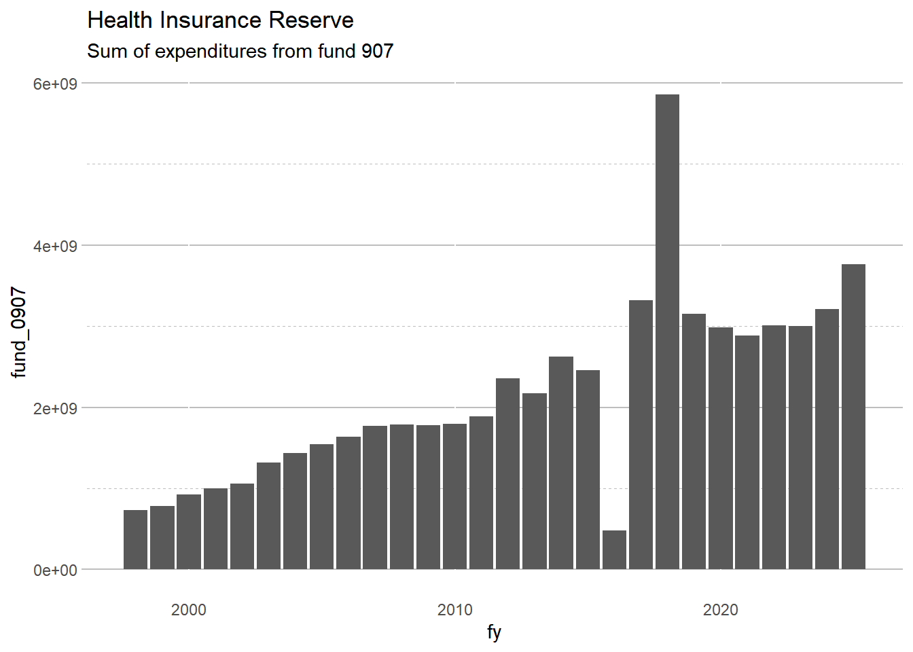
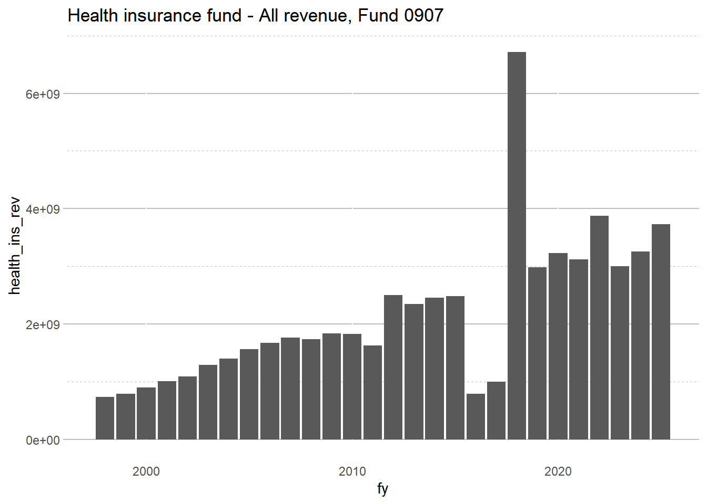
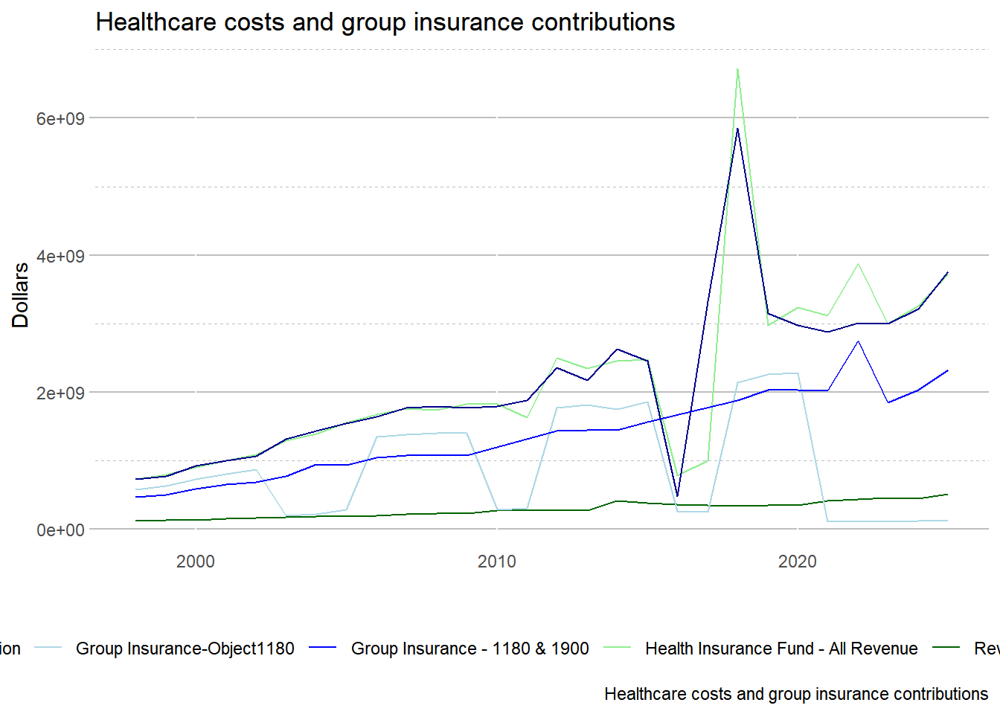
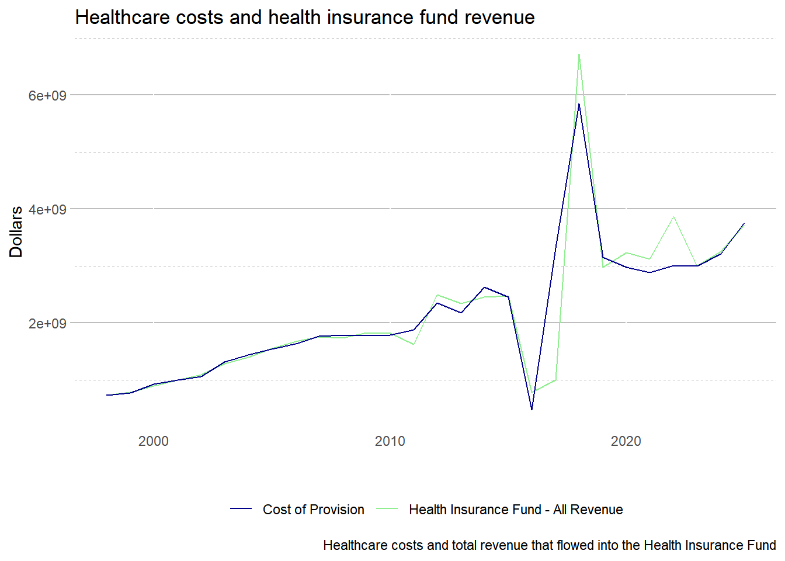

State Employee Health Care = Sum of expenditures for “health care coverage as elected by members per state employees group insurance act.” The payments are made from the Health Insurance Reserve Fund. Employee contributions are not considered a revenue source or an expenditure in our analysis.
Funding for the State Employees Group Insurance plan originates from two funds. The Health Insurance Reserve Fund (HIRF) and the Group Insurance Premium Fund (GIPF). Contributions and payment for Health coverage benefits are deposited INTO HIRF and contributions for life insurance are deposited into the GIPF.
HIRF is the fund mainly used to administer the group insurance program. Funding for HIRF comes from several different revenue sources: the General Revenue Fund (GRF), Road Fund, reimbursements, university funds, and misc funds. Source: CGFA Report.
8.0.1Coding details
In FY2013, the Local Government Health Insurance fund was transferred to the department of Central Management Services (agency changes from 478 to 416 in data.)
Employer group insurance contributions for health insurance are excluded to avoid double counting the cost of healthcare provision. All employer group insurance contributions are coded as object = 1180. BUT the last two fiscal years (FY21 and FY22) were coded as 1900 instead of 1180 for lump sums instead of employer contributions. This caused an ~$2 billion miscalculation when writing the FY21 paper that was caught before publishing.
Fund = 0907 = Health Insurance Reserve Fund, in_ff = 1
Fund = 0457 is “Group Insurance Premium Fund”, in_ff = 1
Fund = 0193 is “Local govt health insurance reserve”, in=ff = 0
fund = 0477 is “Community College Health Insurance”, in=ff = 0.
had large amount in early years
Fund = 9939 is “group self-insurers’ insolv”, in_ff = 1
Fund = 0940 is Self-Insurers security, in_ff = 0
Fund = 0739 is Group Workers Comp Pool Insol, in_ff = 1
eehc = 0 means it is NOT a state healthcare cost but it is an employer contribution of some type to some fund
eehc = 1 means it is a state employee healthcare cost and it is an employer contribution to health insurance
If observation is a group insurance contribution, then the expenditure amount is set to $0 (essentially dropped from analysis).
Code
exp_temp <-read_csv("./data/exp_temp.csv")rev_temp <-read_csv("./data/rev_temp.csv")health_ins_reserve <- exp_temp %>%filter(fund =="0907") %>%group_by(fy) %>%summarize(fund_0907 =sum(expenditure)) health_ins_reserve %>%ggplot(aes(x=fy, y=fund_0907)) +geom_col() +labs(title="Health Insurance Reserve", subtitle ="Sum of expenditures from fund 907")

Code
# object 1180 is inconsistently coded over time form the IOC # object 1180 should be employer contributions to healthcare group insuranceemployer_contributions <- exp_temp %>%filter(object =="1180") %>%group_by(fy) %>%summarize(object1180 =sum(expenditure)) employer_contributions%>%ggplot(aes(x=fy, y=object1180)) +geom_col() +labs(title="Employer Contributions to Healthcare Group Insurance, IOC Object 1180")
Code
employer_contributions2 <- exp_temp %>%filter(object =="1180"& fund=="0001") %>%group_by(fy) %>%summarize(object1180 =sum(expenditure)) employer_contributions2 %>%ggplot(aes(x=fy, y=object1180)) +geom_col() +labs(title="Employer Contributions to Healthcare Group Insurance", subtitle ="IOC Object 1180 from Fund 001")
Code
# examine combined group insurance totals per yeargroup_ins2 <- exp_temp %>%mutate(eehc =ifelse(# group insurance contributions for 1998-2005 and 2013-present# CMS took over health insurance in 2013 fund =="0001"& (object =="1180"| object =="1900") & agency =="416"& appr_org=="20", 1, 0) )%>%mutate(eehc =ifelse(# group insurance contributions for 2006-2012# health insurance was in healthcare and family services, agency 478 for a few years fund =="0001"& object =="1180"& agency =="478"& appr_org=="80", 1, eehc) )%>%filter(eehc ==1) %>%group_by(fy) %>%summarize(dropped_group_premiums =sum(expenditure, na.rm=TRUE))group_ins2 %>%ggplot(aes(x=fy, y=dropped_group_premiums)) +geom_col() +labs(title="Employer Healthcare Group Insurance Contributions", subtitle=" - Dropped from analysis to avoid double counting healthcare expenditures", caption ="Objects 1180 and 1900 from fund 0001. See code for additional coding details.")
8.0.2 Health Insurance Premiums - Revenue Side
Employee insurance premiums for healthcare are a revenue source for the state in the IOC data but are NOT included in the Fiscal Futures analysis as a revenue or in fiscal gap calculations.
Source #’s:
0120 = ins prem-option life
0120 = ins prem-optional life/univ
0347 = optional health - HMO
0348 = optional health - dental
0349 = optional health - univ/local SI
0350 = optional health - univ/local
0351 = optional health - retirement
0352 = optional health - retirement SI
0353 = optional health - retire/dental
0354 = optional health - retirement hmo
2199-2209 = various HMOs, dental, health plans from Health Insurance Reserve (fund)
Code
health_insurance_fund_rev<- rev_temp %>%filter(fund=="0907") %>%# everything that goes to fund 0907group_by(fy) %>%summarize(health_ins_rev =sum(receipts)) health_insurance_fund_rev %>%ggplot(aes(x=fy, y = health_ins_rev)) +geom_col() +labs( title ="Health insurance fund - All revenue, Fund 0907")

Code
#Old Stata step: collect optional insurance premiums to fund 0907 for use in eehc expenditure employee_health_premiums <- rev_temp %>%mutate(employee_premiums =ifelse( fund=="0907"& (source=="0120"| source=="0121"| (source>"0345"& source<"0357")|(source>"2199"& source<"2209")), 1, 0)) %>%filter(employee_premiums ==1)# optional insurance premiums (a term from old Stata Code) = employee insurance premiumsemp_premium <- employee_health_premiums %>%group_by(fy) %>%summarize(employee_premiums_sum =sum(receipts))emp_premium %>%ggplot(aes(x=fy, y = employee_premiums_sum)) +geom_col() +labs( title ="Employee health insurance premiums")
Code
# contributions and benefits paid comparisonggplot()+# geom_line(data=group_ins, aes(x=fy, y=object1180, color='Group Insurance1')) +geom_line(data=health_insurance_fund_rev, aes(x=fy, y=health_ins_rev, color='Health Insurance Fund - All Revenue')) +geom_line(data = emp_premium, aes(x=fy, y = employee_premiums_sum, color ='Revenue from Employee Premiums')) +geom_line(data=health_ins_reserve, aes(x=fy, y=fund_0907, color='Cost of Provision')) +geom_line(data=employer_contributions, aes(x=fy, y=object1180, color='Group Insurance-Object1180')) +# geom_line(data=employer_contributions2, aes(x=fy, y=object1180, color='Employer Contributions-General Fund')) +geom_line(data=group_ins2, aes(x=fy, y=dropped_group_premiums, color='Group Insurance - 1180 & 1900')) +#geom_line(data= healthcare_costs, aes(x=fy, y = cost_of_provision, color = 'Healthcare Costs'))+ guides(fill=guide_legend(nrow=2,byrow=TRUE))+scale_color_manual(values =c('Cost of Provision'='darkblue','Health Insurance Fund - All Revenue'='light green','Revenue from Employee Premiums'='dark green','Group Insurance - 1180 & 1900'='blue','Group Insurance-Object1180'='light blue'# 'Employer Contributions-General Fund' = 'light blue')) +theme(legend.position="bottom") +labs(title="Healthcare costs and group insurance contributions", caption ="Healthcare costs and group insurance contributions", y ="Dollars", x ="")

After removing a few of those lines, we are left with the overall cost providing healthcare and the total amount of money that flows into the Health Insurance Fund.
Code
# contributions and benefits paid comparisonggplot()+# geom_line(data=group_ins, aes(x=fy, y=object1180, color='Group Insurance1')) +geom_line(data=health_insurance_fund_rev, aes(x=fy, y=health_ins_rev, color='Health Insurance Fund - All Revenue')) +# geom_line(data = emp_premium, aes(x=fy, y = employee_premiums_sum, color = 'Revenue from Employee Premiums')) +geom_line(data=health_ins_reserve, aes(x=fy, y=fund_0907, color='Cost of Provision')) +# geom_line(data=employer_contributions, aes(x=fy, y=object1180, color='Group Insurance-Object1180')) +# geom_line(data=employer_contributions2, aes(x=fy, y=object1180, color='Employer Contributions-General Fund')) +#geom_line(data=group_ins2, aes(x=fy, y=dropped_group_premiums, color='Group Insurance - 1180 & 1900')) +#geom_line(data= healthcare_costs, aes(x=fy, y = cost_of_provision, color = 'Healthcare Costs'))+ scale_color_manual(values =c('Cost of Provision'='darkblue','Health Insurance Fund - All Revenue'='light green'# 'Revenue from Employee Premiums' = 'dark green',# 'Group Insurance - 1180 & 1900' = 'blue',# 'Group Insurance-Object1180' = 'light blue'# 'Employer Contributions-General Fund' = 'light blue')) +theme(legend.position="bottom") +labs(title="Healthcare costs and health insurance fund revenue", caption ="Healthcare costs and total revenue that flowed into the Health Insurance Fund", y ="Dollars", x ="" )

Source Code
# State Employee Healthcare Discussion```{r warning = FALSE, message=FALSE, include=FALSE}library(tidyverse)library(haven)library(formatR)library(lubridate)library(smooth)library(forecast)library(scales)library(kableExtra)library(ggplot2)library(readxl)library(tidyverse)library(data.table)library(quantmod)library(geofacet)library(janitor)theme_set(theme_classic())knitr::opts_chunk$set(echo = TRUE, warning = FALSE, message = FALSE)```State Employee Health Care = Sum of expenditures for "health care coverage as elected by members per state employees group insurance act." The payments are made from the Health Insurance Reserve Fund. Employee contributions are not considered a revenue source or an expenditure in our analysis.Funding for the State Employees Group Insurance plan originates from two funds. The Health Insurance Reserve Fund (HIRF) and the Group Insurance Premium Fund (GIPF). Contributions and payment for Health coverage benefits are deposited INTO HIRF and contributions for life insurance are deposited into the GIPF.HIRF is the fund mainly used to administer the group insurance program. Funding for HIRF comes from several different revenue sources: the General Revenue Fund (GRF), Road Fund, reimbursements, university funds, and misc funds. Source: [CGFA Report](https://cgfa.ilga.gov/Upload/fy2011stateemployees'groupinsurance.pdf).### **Coding details**In FY2013, the Local Government Health Insurance fund was transferred to the department of Central Management Services (agency changes from 478 to 416 in data.)Employer group insurance contributions for health insurance are excluded to avoid double counting the cost of healthcare provision. All employer group insurance contributions are coded as object = 1180. BUT the last two fiscal years (FY21 and FY22) were coded as 1900 instead of 1180 for lump sums instead of employer contributions. This caused an \~\$2 billion miscalculation when writing the FY21 paper that was caught before publishing.- Fund = 0907 = Health Insurance Reserve Fund, in_ff = 1- Fund = 0457 is "Group Insurance Premium Fund", in_ff = 1- Fund = 0193 is "Local govt health insurance reserve", in=ff = 0- fund = 0477 is "Community College Health Insurance", in=ff = 0. - had large amount in early years- Fund = 9939 is "group self-insurers' insolv", in_ff = 1- Fund = 0940 is Self-Insurers security, in_ff = 0- Fund = 0739 is Group Workers Comp Pool Insol, in_ff = 1 - eehc = 0 means it is NOT a state healthcare cost but it is an employer contribution of some type to some fund - eehc = 1 means it is a state employee healthcare cost and it is an employer contribution to health insuranceIf observation is a group insurance contribution, then the expenditure amount is set to \$0 (essentially dropped from analysis).```{r healthcare-employer-contributions}exp_temp <- read_csv("./data/exp_temp.csv")rev_temp <- read_csv("./data/rev_temp.csv")health_ins_reserve <- exp_temp %>% filter(fund == "0907") %>% group_by(fy) %>% summarize(fund_0907 = sum(expenditure)) health_ins_reserve %>% ggplot(aes(x=fy, y=fund_0907)) + geom_col() + labs(title="Health Insurance Reserve", subtitle = "Sum of expenditures from fund 907")# object 1180 is inconsistently coded over time form the IOC # object 1180 should be employer contributions to healthcare group insuranceemployer_contributions <- exp_temp %>% filter(object == "1180") %>% group_by(fy) %>% summarize(object1180 = sum(expenditure)) employer_contributions%>% ggplot(aes(x=fy, y=object1180)) + geom_col() + labs(title="Employer Contributions to Healthcare Group Insurance, IOC Object 1180")employer_contributions2 <- exp_temp %>% filter(object == "1180" & fund=="0001") %>% group_by(fy) %>% summarize(object1180 = sum(expenditure)) employer_contributions2 %>% ggplot(aes(x=fy, y=object1180)) + geom_col() + labs(title="Employer Contributions to Healthcare Group Insurance", subtitle = "IOC Object 1180 from Fund 001")# examine combined group insurance totals per yeargroup_ins2 <- exp_temp %>% mutate(eehc = ifelse( # group insurance contributions for 1998-2005 and 2013-present # CMS took over health insurance in 2013 fund == "0001" & (object == "1180" | object =="1900") & agency == "416" & appr_org=="20", 1, 0) )%>% mutate(eehc = ifelse( # group insurance contributions for 2006-2012 # health insurance was in healthcare and family services, agency 478 for a few years fund == "0001" & object == "1180" & agency == "478" & appr_org=="80", 1, eehc) )%>% filter(eehc == 1) %>% group_by(fy) %>% summarize(dropped_group_premiums = sum(expenditure, na.rm=TRUE))group_ins2 %>% ggplot(aes(x=fy, y=dropped_group_premiums)) + geom_col() + labs(title="Employer Healthcare Group Insurance Contributions", subtitle= " - Dropped from analysis to avoid double counting healthcare expenditures", caption = "Objects 1180 and 1900 from fund 0001. See code for additional coding details.")```### Health Insurance Premiums - Revenue SideEmployee insurance premiums for healthcare are a revenue source for the state in the IOC data but are NOT included in the Fiscal Futures analysis as a revenue or in fiscal gap calculations.Source \#'s:- 0120 = ins prem-option life- 0120 = ins prem-optional life/univ- 0347 = optional health - HMO- 0348 = optional health - dental- 0349 = optional health - univ/local SI- 0350 = optional health - univ/local- 0351 = optional health - retirement- 0352 = optional health - retirement SI- 0353 = optional health - retire/dental- 0354 = optional health - retirement hmo- 2199-2209 = various HMOs, dental, health plans from Health Insurance Reserve (fund)```{r employee-insurance-premiums}health_insurance_fund_rev<- rev_temp %>% filter(fund=="0907") %>% # everything that goes to fund 0907 group_by(fy) %>% summarize(health_ins_rev = sum(receipts)) health_insurance_fund_rev %>% ggplot(aes(x=fy, y = health_ins_rev)) + geom_col() + labs( title = "Health insurance fund - All revenue, Fund 0907")#Old Stata step: collect optional insurance premiums to fund 0907 for use in eehc expenditure employee_health_premiums <- rev_temp %>% mutate(employee_premiums = ifelse( fund=="0907" & (source=="0120"| source=="0121"| (source>"0345" & source<"0357")|(source>"2199" & source<"2209")), 1, 0)) %>% filter(employee_premiums == 1)# optional insurance premiums (a term from old Stata Code) = employee insurance premiumsemp_premium <- employee_health_premiums %>% group_by(fy) %>% summarize(employee_premiums_sum = sum(receipts))emp_premium %>% ggplot(aes(x=fy, y = employee_premiums_sum)) + geom_col() + labs( title = "Employee health insurance premiums")``````{r}# contributions and benefits paid comparisonggplot()+# geom_line(data=group_ins, aes(x=fy, y=object1180, color='Group Insurance1')) +geom_line(data=health_insurance_fund_rev, aes(x=fy, y=health_ins_rev, color='Health Insurance Fund - All Revenue')) +geom_line(data = emp_premium, aes(x=fy, y = employee_premiums_sum, color ='Revenue from Employee Premiums')) +geom_line(data=health_ins_reserve, aes(x=fy, y=fund_0907, color='Cost of Provision')) +geom_line(data=employer_contributions, aes(x=fy, y=object1180, color='Group Insurance-Object1180')) +# geom_line(data=employer_contributions2, aes(x=fy, y=object1180, color='Employer Contributions-General Fund')) +geom_line(data=group_ins2, aes(x=fy, y=dropped_group_premiums, color='Group Insurance - 1180 & 1900')) +#geom_line(data= healthcare_costs, aes(x=fy, y = cost_of_provision, color = 'Healthcare Costs'))+ guides(fill=guide_legend(nrow=2,byrow=TRUE))+scale_color_manual(values =c('Cost of Provision'='darkblue','Health Insurance Fund - All Revenue'='light green','Revenue from Employee Premiums'='dark green','Group Insurance - 1180 & 1900'='blue','Group Insurance-Object1180'='light blue'# 'Employer Contributions-General Fund' = 'light blue')) +theme(legend.position="bottom") +labs(title="Healthcare costs and group insurance contributions", caption ="Healthcare costs and group insurance contributions", y ="Dollars", x ="")```After removing a few of those lines, we are left with the overall cost providing healthcare and the total amount of money that flows into the Health Insurance Fund.```{r}# contributions and benefits paid comparisonggplot()+# geom_line(data=group_ins, aes(x=fy, y=object1180, color='Group Insurance1')) +geom_line(data=health_insurance_fund_rev, aes(x=fy, y=health_ins_rev, color='Health Insurance Fund - All Revenue')) +# geom_line(data = emp_premium, aes(x=fy, y = employee_premiums_sum, color = 'Revenue from Employee Premiums')) +geom_line(data=health_ins_reserve, aes(x=fy, y=fund_0907, color='Cost of Provision')) +# geom_line(data=employer_contributions, aes(x=fy, y=object1180, color='Group Insurance-Object1180')) +# geom_line(data=employer_contributions2, aes(x=fy, y=object1180, color='Employer Contributions-General Fund')) +#geom_line(data=group_ins2, aes(x=fy, y=dropped_group_premiums, color='Group Insurance - 1180 & 1900')) +#geom_line(data= healthcare_costs, aes(x=fy, y = cost_of_provision, color = 'Healthcare Costs'))+ scale_color_manual(values =c('Cost of Provision'='darkblue','Health Insurance Fund - All Revenue'='light green'# 'Revenue from Employee Premiums' = 'dark green',# 'Group Insurance - 1180 & 1900' = 'blue',# 'Group Insurance-Object1180' = 'light blue'# 'Employer Contributions-General Fund' = 'light blue')) +theme(legend.position="bottom") +labs(title="Healthcare costs and health insurance fund revenue", caption ="Healthcare costs and total revenue that flowed into the Health Insurance Fund", y ="Dollars", x ="" )```